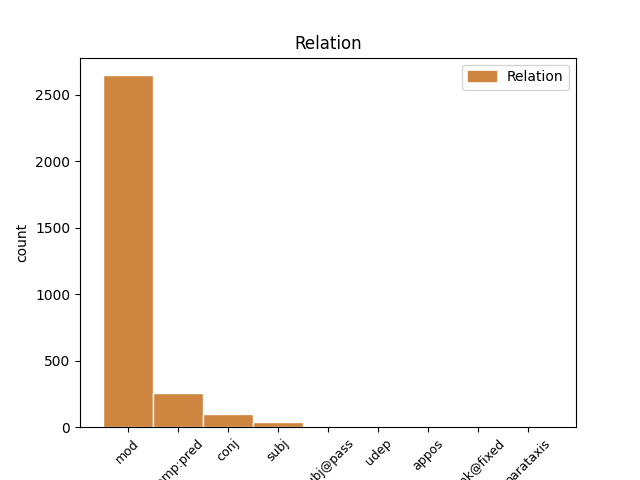
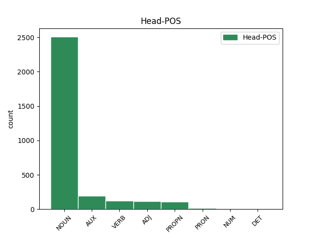
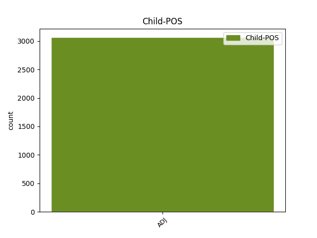

Distribution of features within this leaf



Agreement Rules sorted by frequency.
- When the dependent token is the modifer(mod) of the head token, and the dependent token is ADJ.
1 Αυτό _ _ _ _ 0 _ _ _
2 μπορεί _ _ _ _ 0 _ _ _
3 να _ _ _ _ 0 _ _ _
4 μην _ _ _ _ 0 _ _ _
5 οδηγήσει _ _ _ _ 0 _ _ _
6 σ _ _ _ _ 0 _ _ _
7 τη _ _ _ _ 0 _ _ _
8 λήξη _ _ _ _ 0 _ _ _
9 του _ _ _ _ 0 _ _ _
10 εν _ _ _ _ 0 _ _ _
11 λόγω _ _ _ _ 0 _ _ _
12 ζητήματος _ _ _ _ 0 _ _ _
13 αλλά _ _ _ _ 0 _ _ _
14 , _ _ _ _ 0 _ _ _
15 σ _ _ _ _ 0 _ _ _
16 τη _ _ _ _ 0 _ _ _
17 μορφή _ _ _ _ 0 _ _ _
18 υπό _ _ _ _ 0 _ _ _
19 την _ _ _ _ 0 _ _ _
20 οποία _ _ _ _ 0 _ _ _
21 την _ _ _ _ 0 _ _ _
22 λάβαμε _ _ _ _ 0 _ _ _
23 , _ _ _ _ 0 _ _ _
24 αυτή _ _ _ _ 0 _ _ _
25 η _ _ _ _ 0 _ _ _
26 αίτηση _ _ _ _ 0 _ _ _
27 άρσης _ _ _ _ 0 _ _ _
28 της _ _ _ _ 0 _ _ _
29 ασυλίας _ _ _ _ 0 _ _ _
30 ήταν _ _ _ _ 0 _ _ _
31 , _ _ _ _ 0 _ _ _
32 κατά _ _ _ _ 0 _ _ _
33 την _ _ _ _ 0 _ _ _
34 άποψη _ _ _ _ 0 _ _ _
35 της _ _ _ _ 0 _ _ _
36 Επιτροπής _ _ _ _ 0 _ _ _
37 Νομικών νομικός ADJ ADJ Case=Gen|Gender=Neut|Number=Plur 38 mod _ _
38 Θεμάτων θέμα NOUN NOUN Case=Gen|Gender=Neut|Number=Plur 0 _ _ _
39 , _ _ _ _ 0 _ _ _
40 απαράδεκτη _ _ _ _ 0 _ _ _
41 , _ _ _ _ 0 _ _ _
42 άποψη _ _ _ _ 0 _ _ _
43 την _ _ _ _ 0 _ _ _
44 οποία _ _ _ _ 0 _ _ _
45 συνιστώ _ _ _ _ 0 _ _ _
46 σ _ _ _ _ 0 _ _ _
47 το _ _ _ _ 0 _ _ _
48 Σώμα _ _ _ _ 0 _ _ _
49 να _ _ _ _ 0 _ _ _
50 υιοθετήσει _ _ _ _ 0 _ _ _
51 . _ _ _ _ 0 _ _ _
1 Αυτό _ _ _ _ 0 _ _ _
2 μπορεί _ _ _ _ 0 _ _ _
3 να _ _ _ _ 0 _ _ _
4 μην _ _ _ _ 0 _ _ _
5 οδηγήσει _ _ _ _ 0 _ _ _
6 σ _ _ _ _ 0 _ _ _
7 τη _ _ _ _ 0 _ _ _
8 λήξη _ _ _ _ 0 _ _ _
9 του _ _ _ _ 0 _ _ _
10 εν _ _ _ _ 0 _ _ _
11 λόγω _ _ _ _ 0 _ _ _
12 ζητήματος _ _ _ _ 0 _ _ _
13 αλλά _ _ _ _ 0 _ _ _
14 , _ _ _ _ 0 _ _ _
15 σ _ _ _ _ 0 _ _ _
16 τη _ _ _ _ 0 _ _ _
17 μορφή _ _ _ _ 0 _ _ _
18 υπό _ _ _ _ 0 _ _ _
19 την _ _ _ _ 0 _ _ _
20 οποία _ _ _ _ 0 _ _ _
21 την _ _ _ _ 0 _ _ _
22 λάβαμε _ _ _ _ 0 _ _ _
23 , _ _ _ _ 0 _ _ _
24 αυτή _ _ _ _ 0 _ _ _
25 η _ _ _ _ 0 _ _ _
26 αίτηση _ _ _ _ 0 _ _ _
27 άρσης _ _ _ _ 0 _ _ _
28 της _ _ _ _ 0 _ _ _
29 ασυλίας _ _ _ _ 0 _ _ _
30 ήταν είμαι AUX AUX Aspect=Imp|Mood=Ind|Number=Sing|Person=3|Tense=Past|VerbForm=Fin|Voice=Pass 0 _ _ _
31 , _ _ _ _ 0 _ _ _
32 κατά _ _ _ _ 0 _ _ _
33 την _ _ _ _ 0 _ _ _
34 άποψη _ _ _ _ 0 _ _ _
35 της _ _ _ _ 0 _ _ _
36 Επιτροπής _ _ _ _ 0 _ _ _
37 Νομικών _ _ _ _ 0 _ _ _
38 Θεμάτων _ _ _ _ 0 _ _ _
39 , _ _ _ _ 0 _ _ _
40 απαράδεκτη απαράδεκτος ADJ ADJ Case=Nom|Gender=Fem|Number=Sing 30 comp:pred _ SpaceAfter=No
41 , _ _ _ _ 0 _ _ _
42 άποψη _ _ _ _ 0 _ _ _
43 την _ _ _ _ 0 _ _ _
44 οποία _ _ _ _ 0 _ _ _
45 συνιστώ _ _ _ _ 0 _ _ _
46 σ _ _ _ _ 0 _ _ _
47 το _ _ _ _ 0 _ _ _
48 Σώμα _ _ _ _ 0 _ _ _
49 να _ _ _ _ 0 _ _ _
50 υιοθετήσει _ _ _ _ 0 _ _ _
51 . _ _ _ _ 0 _ _ _
1 Τα _ _ _ _ 0 _ _ _
2 εγκλήματα _ _ _ _ 0 _ _ _
3 είναι _ _ _ _ 0 _ _ _
4 σοβαρά _ _ _ _ 0 _ _ _
5 και _ _ _ _ 0 _ _ _
6 ανήκουν _ _ _ _ 0 _ _ _
7 σε _ _ _ _ 0 _ _ _
8 μια _ _ _ _ 0 _ _ _
9 κατηγορία _ _ _ _ 0 _ _ _
10 για _ _ _ _ 0 _ _ _
11 την _ _ _ _ 0 _ _ _
12 οποία _ _ _ _ 0 _ _ _
13 κανονικά _ _ _ _ 0 _ _ _
14 δεν _ _ _ _ 0 _ _ _
15 προσφέρεται _ _ _ _ 0 _ _ _
16 βουλευτική _ _ _ _ 0 _ _ _
17 ασυλία _ _ _ _ 0 _ _ _
18 , _ _ _ _ 0 _ _ _
19 επειδή _ _ _ _ 0 _ _ _
20 δεν _ _ _ _ 0 _ _ _
21 αφορούν _ _ _ _ 0 _ _ _
22 τις _ _ _ _ 0 _ _ _
23 συνήθεις συνήθης ADJ ADJ Case=Acc|Gender=Fem|Number=Plur 0 _ _ _
24 και _ _ _ _ 0 _ _ _
25 προσήκουσες προσήκων ADJ ADJ Case=Acc|Gender=Fem|Number=Plur 23 conj _ _
26 δραστηριότητες _ _ _ _ 0 _ _ _
27 βουλευτή _ _ _ _ 0 _ _ _
28 του _ _ _ _ 0 _ _ _
29 Σώματος _ _ _ _ 0 _ _ _
30 , _ _ _ _ 0 _ _ _
31 ή _ _ _ _ 0 _ _ _
32 πολιτικού _ _ _ _ 0 _ _ _
33 που _ _ _ _ 0 _ _ _
34 δραστηριοποιείται _ _ _ _ 0 _ _ _
35 σε _ _ _ _ 0 _ _ _
36 μια _ _ _ _ 0 _ _ _
37 δημοκρατική _ _ _ _ 0 _ _ _
38 κοινωνία _ _ _ _ 0 _ _ _
39 . _ _ _ _ 0 _ _ _
1 Είναι _ _ _ _ 0 _ _ _
2 σημαντικό _ _ _ _ 0 _ _ _
3 να _ _ _ _ 0 _ _ _
4 υπογραμμίσω _ _ _ _ 0 _ _ _
5 το _ _ _ _ 0 _ _ _
6 γεγονός _ _ _ _ 0 _ _ _
7 ότι _ _ _ _ 0 _ _ _
8 και _ _ _ _ 0 _ _ _
9 οι _ _ _ _ 0 _ _ _
10 δύο _ _ _ _ 0 _ _ _
11 βουλευτές _ _ _ _ 0 _ _ _
12 διατρανώνουν _ _ _ _ 0 _ _ _
13 σθεναρά _ _ _ _ 0 _ _ _
14 την _ _ _ _ 0 _ _ _
15 αθωότητά _ _ _ _ 0 _ _ _
16 τους _ _ _ _ 0 _ _ _
17 και _ _ _ _ 0 _ _ _
18 καταγγέλλουν _ _ _ _ 0 _ _ _
19 αυτό _ _ _ _ 0 _ _ _
20 που _ _ _ _ 0 _ _ _
21 οι _ _ _ _ 0 _ _ _
22 ίδιοι ίδιος ADJ ADJ Case=Nom|Gender=Masc|Number=Plur 23 subj _ _
23 θεωρούν θεωρώ VERB VERB Aspect=Imp|Mood=Ind|Number=Plur|Person=3|Tense=Pres|VerbForm=Fin|Voice=Act 0 _ _ _
24 καταχρήσεις _ _ _ _ 0 _ _ _
25 σ _ _ _ _ 0 _ _ _
26 τη _ _ _ _ 0 _ _ _
27 διαδικασία _ _ _ _ 0 _ _ _
28 δίωξης _ _ _ _ 0 _ _ _
29 . _ _ _ _ 0 _ _ _
1 Την _ _ _ _ 0 _ _ _
2 μεθεπομένη μεθεπόμενος ADJ ADJ Case=Acc|Gender=Fem|Number=Sing 3 udep _ _
3 σχημάτισε σχηματίζω VERB VERB Aspect=Perf|Mood=Ind|Number=Sing|Person=3|Tense=Past|VerbForm=Fin|Voice=Act 0 _ _ _
4 κυβέρνηση _ _ _ _ 0 _ _ _
5 ο _ _ _ _ 0 _ _ _
6 Δημήτριος _ _ _ _ 0 _ _ _
7 Ράλλης _ _ _ _ 0 _ _ _
8 , _ _ _ _ 0 _ _ _
9 παραιτήθηκε _ _ _ _ 0 _ _ _
10 ο _ _ _ _ 0 _ _ _
11 Κουντουριώτης _ _ _ _ 0 _ _ _
12 κι _ _ _ _ 0 _ _ _
13 έγινε _ _ _ _ 0 _ _ _
14 αντιβασίλισσα _ _ _ _ 0 _ _ _
15 η _ _ _ _ 0 _ _ _
16 βασιλομήτωρ _ _ _ _ 0 _ _ _
17 Όλγα _ _ _ _ 0 _ _ _
18 μέχρι _ _ _ _ 0 _ _ _
19 να _ _ _ _ 0 _ _ _
20 γίνει _ _ _ _ 0 _ _ _
21 δημοψήφισμα _ _ _ _ 0 _ _ _
22 , _ _ _ _ 0 _ _ _
23 το _ _ _ _ 0 _ _ _
24 οποίο _ _ _ _ 0 _ _ _
25 θα _ _ _ _ 0 _ _ _
26 επανέφερε _ _ _ _ 0 _ _ _
27 τον _ _ _ _ 0 _ _ _
28 εξόριστο _ _ _ _ 0 _ _ _
29 Κωνσταντίνο _ _ _ _ 0 _ _ _
30 . _ _ _ _ 0 _ _ _
1 πρόκειται _ _ _ _ 0 _ _ _
2 για _ _ _ _ 0 _ _ _
3 αυτό _ _ _ _ 0 _ _ _
4 το _ _ _ _ 0 _ _ _
5 οποίο _ _ _ _ 0 _ _ _
6 αποκαλύφθηκε _ _ _ _ 0 _ _ _
7 κατά _ _ _ _ 0 _ _ _
8 τη _ _ _ _ 0 _ _ _
9 διάρκεια _ _ _ _ 0 _ _ _
10 αυτής _ _ _ _ 0 _ _ _
11 της _ _ _ _ 0 _ _ _
12 διαδικασίας _ _ _ _ 0 _ _ _
13 , _ _ _ _ 0 _ _ _
14 ότι _ _ _ _ 0 _ _ _
15 ο _ _ _ _ 0 _ _ _
16 Εισαγγελέας _ _ _ _ 0 _ _ _
17 κάποια _ _ _ _ 0 _ _ _
18 στιγμή _ _ _ _ 0 _ _ _
19 ζήτησε _ _ _ _ 0 _ _ _
20 από _ _ _ _ 0 _ _ _
21 την _ _ _ _ 0 _ _ _
22 Πρόεδρο πρόεδρος NOUN NOUN Case=Acc|Gender=Fem|Number=Sing 0 _ _ _
23 του _ _ _ _ 0 _ _ _
24 Σώματος _ _ _ _ 0 _ _ _
25 , _ _ _ _ 0 _ _ _
26 την _ _ _ _ 0 _ _ _
27 προκάτοχό προκάτοχος ADJ ADJ Case=Acc|Gender=Fem|Number=Sing 22 appos _ _
28 σας _ _ _ _ 0 _ _ _
29 , _ _ _ _ 0 _ _ _
30 λεπτομέρειες _ _ _ _ 0 _ _ _
31 για _ _ _ _ 0 _ _ _
32 την _ _ _ _ 0 _ _ _
33 ψήφο _ _ _ _ 0 _ _ _
34 που _ _ _ _ 0 _ _ _
35 έχουν _ _ _ _ 0 _ _ _
36 δώσει _ _ _ _ 0 _ _ _
37 οι _ _ _ _ 0 _ _ _
38 δύο _ _ _ _ 0 _ _ _
39 συγκεκριμένοι _ _ _ _ 0 _ _ _
40 βουλευτές _ _ _ _ 0 _ _ _
41 προκειμένου _ _ _ _ 0 _ _ _
42 να _ _ _ _ 0 _ _ _
43 διευκρινιστεί _ _ _ _ 0 _ _ _
44 περαιτέρω _ _ _ _ 0 _ _ _
45 η _ _ _ _ 0 _ _ _
46 πιθανότητα _ _ _ _ 0 _ _ _
47 να _ _ _ _ 0 _ _ _
48 είχαν _ _ _ _ 0 _ _ _
49 ασκήσει _ _ _ _ 0 _ _ _
50 αθέμιτη _ _ _ _ 0 _ _ _
51 επιρροή _ _ _ _ 0 _ _ _
52 . _ _ _ _ 0 _ _ _
1 Αντίσταση _ _ _ _ 0 _ _ _
2 άξια _ _ _ _ 0 _ _ _
3 λόγου _ _ _ _ 0 _ _ _
4 πρόβαλε _ _ _ _ 0 _ _ _
5 η _ _ _ _ 0 _ _ _
6 ΕΛΔΥΚ _ _ _ _ 0 _ _ _
7 και _ _ _ _ 0 _ _ _
8 ορισμένα _ _ _ _ 0 _ _ _
9 σώματα _ _ _ _ 0 _ _ _
10 Κυπρίων _ _ _ _ 0 _ _ _
11 Εθνοφρουρών _ _ _ _ 0 _ _ _
12 , _ _ _ _ 0 _ _ _
13 πολλοί πολύς ADJ ADJ Case=Nom|Gender=Masc|Number=Plur 17 subj@pass _ _
14 από _ _ _ _ 0 _ _ _
15 τους _ _ _ _ 0 _ _ _
16 οποίους _ _ _ _ 0 _ _ _
17 σκοτώθηκαν σκοτώνω VERB VERB Aspect=Perf|Mood=Ind|Number=Plur|Person=3|Tense=Past|VerbForm=Fin|Voice=Pass 0 _ _ _
18 , _ _ _ _ 0 _ _ _
19 αιχμαλωτίστηκαν _ _ _ _ 0 _ _ _
20 ή _ _ _ _ 0 _ _ _
21 χάθηκαν _ _ _ _ 0 _ _ _
22 τα _ _ _ _ 0 _ _ _
23 ίχνη _ _ _ _ 0 _ _ _
24 τους _ _ _ _ 0 _ _ _
25 . _ _ _ _ 0 _ _ _
1 Οι _ _ _ _ 0 _ _ _
2 δύο _ _ _ _ 0 _ _ _
3 προτάσεις _ _ _ _ 0 _ _ _
4 οδηγίας _ _ _ _ 0 _ _ _
5 σχετικά _ _ _ _ 0 _ _ _
6 με _ _ _ _ 0 _ _ _
7 τη _ _ _ _ 0 _ _ _
8 σύναψη _ _ _ _ 0 _ _ _
9 συμβάσεων _ _ _ _ 0 _ _ _
10 θα _ _ _ _ 0 _ _ _
11 πρέπει _ _ _ _ 0 _ _ _
12 επομένως _ _ _ _ 0 _ _ _
13 να _ _ _ _ 0 _ _ _
14 επιτρέψουν _ _ _ _ 0 _ _ _
15 σ _ _ _ _ 0 _ _ _
16 την _ _ _ _ 0 _ _ _
17 πρωτοβάθμια _ _ _ _ 0 _ _ _
18 και _ _ _ _ 0 _ _ _
19 δευτεροβάθμια _ _ _ _ 0 _ _ _
20 αυτοδιοίκηση _ _ _ _ 0 _ _ _
21 , _ _ _ _ 0 _ _ _
22 καθώς _ _ _ _ 0 _ _ _
23 και _ _ _ _ 0 _ _ _
24 σ _ _ _ _ 0 _ _ _
25 τις _ _ _ _ 0 _ _ _
26 κρατικές _ _ _ _ 0 _ _ _
27 αρχές _ _ _ _ 0 _ _ _
28 να _ _ _ _ 0 _ _ _
29 προμηθεύονται _ _ _ _ 0 _ _ _
30 αγαθά _ _ _ _ 0 _ _ _
31 και _ _ _ _ 0 _ _ _
32 υπηρεσίες _ _ _ _ 0 _ _ _
33 με _ _ _ _ 0 _ _ _
34 τέτοιο _ _ _ _ 0 _ _ _
35 τρόπο _ _ _ _ 0 _ _ _
36 ώστε _ _ _ _ 0 _ _ _
37 η _ _ _ _ 0 _ _ _
38 επιβάρυνση _ _ _ _ 0 _ _ _
39 σ _ _ _ _ 0 _ _ _
40 το _ _ _ _ 0 _ _ _
41 περιβάλλον _ _ _ _ 0 _ _ _
42 να _ _ _ _ 0 _ _ _
43 είναι _ _ _ _ 0 _ _ _
44 όσο _ _ _ _ 0 _ _ _
45 το ο DET DET Case=Acc|Definite=Def|Gender=Neut|Number=Sing|PronType=Art 0 _ _ _
46 δυνατόν δυνατός ADJ ADJ Case=Acc|Gender=Neut|Number=Sing 45 unk@fixed _ _
47 πιο _ _ _ _ 0 _ _ _
48 περιορισμένη _ _ _ _ 0 _ _ _
49 . _ _ _ _ 0 _ _ _
Disagree Examples:
1 Ηλεκτρικό ηλεκτρικός ADJ ADJ Case=Nom|Gender=Neut|Number=Sing 6 subj@pass _ SpaceAfter=No
2 , _ _ _ _ 0 _ _ _
3 νερό _ _ _ _ 0 _ _ _
4 και _ _ _ _ 0 _ _ _
5 επικοινωνίες _ _ _ _ 0 _ _ _
6 έχουν έχω AUX AUX Aspect=Imp|Mood=Ind|Number=Plur|Person=3|Tense=Pres|VerbForm=Fin|Voice=Act 0 _ _ _
7 διακοπεί _ _ _ _ 0 _ _ _
8 , _ _ _ _ 0 _ _ _
9 καθώς _ _ _ _ 0 _ _ _
10 σ _ _ _ _ 0 _ _ _
11 την _ _ _ _ 0 _ _ _
12 περιοχή _ _ _ _ 0 _ _ _
13 επικρατούν _ _ _ _ 0 _ _ _
14 τις _ _ _ _ 0 _ _ _
15 τελευταίες _ _ _ _ 0 _ _ _
16 ημέρες _ _ _ _ 0 _ _ _
17 χαμηλές _ _ _ _ 0 _ _ _
18 θερμοκρασίες _ _ _ _ 0 _ _ _
19 και _ _ _ _ 0 _ _ _
20 έντονες _ _ _ _ 0 _ _ _
21 χιονοπτώσεις _ _ _ _ 0 _ _ _
22 . _ _ _ _ 0 _ _ _
1 Πράγματι _ _ _ _ 0 _ _ _
2 , _ _ _ _ 0 _ _ _
3 η _ _ _ _ 0 _ _ _
4 Σύμβαση _ _ _ _ 0 _ _ _
5 του _ _ _ _ 0 _ _ _
6 1991 _ _ _ _ 0 _ _ _
7 σχετικά _ _ _ _ 0 _ _ _
8 με _ _ _ _ 0 _ _ _
9 την _ _ _ _ 0 _ _ _
10 εκτέλεση εκτέλεση NOUN NOUN Case=Acc|Gender=Fem|Number=Sing 0 _ _ _
11 αλλοδαπών αλλοδαπός ADJ ADJ Case=Gen|Gender=Fem|Number=Plur 10 mod _ _
12 αποφάσεων _ _ _ _ 0 _ _ _
13 σε _ _ _ _ 0 _ _ _
14 ποινικές _ _ _ _ 0 _ _ _
15 υποθέσεις _ _ _ _ 0 _ _ _
16 - _ _ _ _ 0 _ _ _
17 η _ _ _ _ 0 _ _ _
18 οποία _ _ _ _ 0 _ _ _
19 διαφορετικά _ _ _ _ 0 _ _ _
20 θα _ _ _ _ 0 _ _ _
21 ήταν _ _ _ _ 0 _ _ _
22 σχετική _ _ _ _ 0 _ _ _
23 με _ _ _ _ 0 _ _ _
24 το _ _ _ _ 0 _ _ _
25 θέμα _ _ _ _ 0 _ _ _
26 μας _ _ _ _ 0 _ _ _
27 - _ _ _ _ 0 _ _ _
28 δεν _ _ _ _ 0 _ _ _
29 έχει _ _ _ _ 0 _ _ _
30 τεθεί _ _ _ _ 0 _ _ _
31 ακόμα _ _ _ _ 0 _ _ _
32 σε _ _ _ _ 0 _ _ _
33 ισχύ _ _ _ _ 0 _ _ _
34 , _ _ _ _ 0 _ _ _
35 δέκα _ _ _ _ 0 _ _ _
36 χρόνια _ _ _ _ 0 _ _ _
37 ύστερα _ _ _ _ 0 _ _ _
38 από _ _ _ _ 0 _ _ _
39 την _ _ _ _ 0 _ _ _
40 υπογραφή _ _ _ _ 0 _ _ _
41 της _ _ _ _ 0 _ _ _
42 . _ _ _ _ 0 _ _ _
1 Υπάρχει _ _ _ _ 0 _ _ _
2 μία _ _ _ _ 0 _ _ _
3 ομάδα _ _ _ _ 0 _ _ _
4 τροπολογιών _ _ _ _ 0 _ _ _
5 που _ _ _ _ 0 _ _ _
6 υπέβαλαν _ _ _ _ 0 _ _ _
7 οι _ _ _ _ 0 _ _ _
8 συνάδελφοι _ _ _ _ 0 _ _ _
9 της _ _ _ _ 0 _ _ _
10 Ομάδας ομάδα NOUN NOUN Case=Gen|Gender=Fem|Number=Sing 0 _ _ _
11 των _ _ _ _ 0 _ _ _
12 Πρασίνων πράσινος ADJ ADJ Case=Gen|Gender=Masc|Number=Plur 10 mod _ _
13 / _ _ _ _ 0 _ _ _
14 Ευρωπαϊκής _ _ _ _ 0 _ _ _
15 Ελεύθερης _ _ _ _ 0 _ _ _
16 Συμμαχίας _ _ _ _ 0 _ _ _
17 , _ _ _ _ 0 _ _ _
18 που _ _ _ _ 0 _ _ _
19 προσπαθούν _ _ _ _ 0 _ _ _
20 να _ _ _ _ 0 _ _ _
21 πουν _ _ _ _ 0 _ _ _
22 ότι _ _ _ _ 0 _ _ _
23 η _ _ _ _ 0 _ _ _
24 έγκριση _ _ _ _ 0 _ _ _
25 του _ _ _ _ 0 _ _ _
26 ευρωπαϊκού _ _ _ _ 0 _ _ _
27 εντάλματος _ _ _ _ 0 _ _ _
28 σύλληψης _ _ _ _ 0 _ _ _
29 εξαρτάται _ _ _ _ 0 _ _ _
30 από _ _ _ _ 0 _ _ _
31 τη _ _ _ _ 0 _ _ _
32 βελτίωση _ _ _ _ 0 _ _ _
33 συγκεκριμένων _ _ _ _ 0 _ _ _
34 δικαστικών _ _ _ _ 0 _ _ _
35 προτύπων _ _ _ _ 0 _ _ _
36 σ _ _ _ _ 0 _ _ _
37 την _ _ _ _ 0 _ _ _
38 Ευρωπαϊκή _ _ _ _ 0 _ _ _
39 Ένωση _ _ _ _ 0 _ _ _
40 . _ _ _ _ 0 _ _ _
1 Κύριε _ _ _ _ 0 _ _ _
2 Πρόεδρε _ _ _ _ 0 _ _ _
3 , _ _ _ _ 0 _ _ _
4 δεν _ _ _ _ 0 _ _ _
5 τρέφω _ _ _ _ 0 _ _ _
6 κανένα _ _ _ _ 0 _ _ _
7 σεβασμό _ _ _ _ 0 _ _ _
8 προς _ _ _ _ 0 _ _ _
9 εκείνους _ _ _ _ 0 _ _ _
10 που _ _ _ _ 0 _ _ _
11 επιδιώκουν _ _ _ _ 0 _ _ _
12 να _ _ _ _ 0 _ _ _
13 θυσιάσουν _ _ _ _ 0 _ _ _
14 την _ _ _ _ 0 _ _ _
15 ζωή ζωή NOUN NOUN Case=Acc|Gender=Fem|Number=Sing 0 _ _ _
16 των _ _ _ _ 0 _ _ _
17 υπολοίπων υπόλοιπος ADJ ADJ Case=Gen|Gender=Fem|Number=Plur 15 mod _ _
18 για _ _ _ _ 0 _ _ _
19 να _ _ _ _ 0 _ _ _
20 επιτύχουν _ _ _ _ 0 _ _ _
21 τους _ _ _ _ 0 _ _ _
22 στόχους _ _ _ _ 0 _ _ _
23 τους _ _ _ _ 0 _ _ _
24 . _ _ _ _ 0 _ _ _
1 Προκειμένου _ _ _ _ 0 _ _ _
2 να _ _ _ _ 0 _ _ _
3 το _ _ _ _ 0 _ _ _
4 ενισχύσουν _ _ _ _ 0 _ _ _
5 , _ _ _ _ 0 _ _ _
6 οι _ _ _ _ 0 _ _ _
7 κάτοικοι _ _ _ _ 0 _ _ _
8 το _ _ _ _ 0 _ _ _
9 οχύρωσαν _ _ _ _ 0 _ _ _
10 με _ _ _ _ 0 _ _ _
11 τείχη _ _ _ _ 0 _ _ _
12 , _ _ _ _ 0 _ _ _
13 διάσπαρτα _ _ _ _ 0 _ _ _
14 με _ _ _ _ 0 _ _ _
15 πολεμίστρες _ _ _ _ 0 _ _ _
16 και _ _ _ _ 0 _ _ _
17 κανόνια _ _ _ _ 0 _ _ _
18 , _ _ _ _ 0 _ _ _
19 τα _ _ _ _ 0 _ _ _
20 οποία _ _ _ _ 0 _ _ _
21 ήταν είμαι AUX AUX Aspect=Imp|Mood=Ind|Number=Sing|Person=3|Tense=Past|VerbForm=Fin|Voice=Pass 0 _ _ _
22 ισχυρότατα ισχυρός ADJ ADJ Case=Nom|Degree=Sup|Gender=Neut|Number=Plur 21 comp:pred _ _
23 και _ _ _ _ 0 _ _ _
24 πανύψηλα _ _ _ _ 0 _ _ _
25 . _ _ _ _ 0 _ _ _